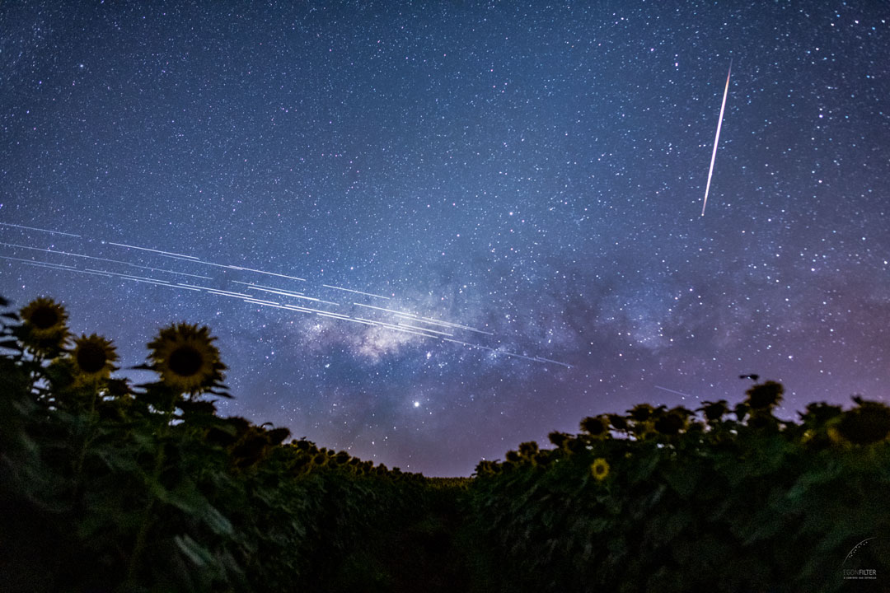

Executive Summary
Photograph a patch of sky 10 degrees on a side for 10 seconds and the odds that an artificial object lands on that one frame are 15%. Satellites leaving white streaks across astronomical images is an old story, and this 15% is a count, taken from observations, of how often that happens. Researchers from the IAU Centre for the Protection of the Dark and Quiet Sky (IAU CPS) and the Czech Academy of Sciences sorted through 32 million brightness measurements recorded by a single robotic observatory over the course of 2025 and posted the result to arXiv in early September.
The starting point is density. Artificial objects brighter than magnitude 7.0, the upper limit set by the International Astronomical Union, sit in the sky at a rate of 0.00076 objects per square degree. That 15% is what you get when you combine this density with a field size and an exposure duration. It is an average over all nighttime hours, so it runs higher near twilight, when most of the sky is still sunlit, and lower near midnight, when the Earth's shadow covers the sky.
Sections 1 through 3 follow what the paper actually measured and what it held back from claiming, and the data-side response added in Section 4 is this article's reading, not a claim the paper makes.
Key Figures
Sources: Mallama, Karpov, Cole, The Impact of Artificial Space Objects on Optical Astronomy as Determined from 32 Million Photometric Observations, arXiv:2609.02951 (2026), Tables 3 and 4 and Section 9 · IAU CPS tally, checked 6 September 2026
15%
10-degree field, 10-second exposure
Odds an object brighter than magnitude 7.0 lands on that one frame
59%
Odds of seeing one by eye
A satellite falling inside the peripheral annulus under a dark sky
2:1 → 50:1
Satellites per rocket body
Across the 2020 line, satellites tripled and rockets fell to a seventh
2.33M
Satellites in constellations still in planning
Filed with the FCC and the ITU, twice the million the paper assumes
Ten Seconds on a 10-Degree Field Comes to 15%
Astronomers measure brightness in magnitudes. Smaller numbers mean brighter objects, and one magnitude is a factor of about 2.5 in brightness. In a 2024 statement, the International Astronomical Union set an upper brightness limit for satellites at Johnson visual magnitude 7.0. That limit holds for altitudes up to 550 km, and above that height it relaxes with altitude. Apply the equation and it evaluates to magnitude 8.0 at 1,380 km, which is higher than most objects orbiting the Earth. The same statement recommended that spacecraft should not be visible to the unaided eye, and magnitude 6.0 is where the naked eye stops under skies with little light pollution. Six, seven and eight are the three reference points of this study.
Setting a limit does not make it hold. Two of this paper's authors published a study in MNRAS Letters in 2025 that measured the brightness of five constellations, Starlink, OneWeb, BlueBird and China's Qianfan and Guowang, and reported that nearly all of these spacecraft exceed the magnitude 7 limit and that most also exceed the magnitude 6 limit. So what the new paper counts is not whether objects break the limit. It is how often objects that already break it land on a single frame.

The material is the public database of the Mini-MegaTORTORA (MMT9) robotic observatory in Russia at 43.65N and 41.43E. Operating since 2014, it sweeps the sky through nine channels and records brightness ten times a second. Its magnitudes agree to within 0.1 with the Johnson V band that the IAU used to set its limit, the authors note. The ruler that measures and the ruler that regulates share a scale. From 2025 the team extracted 32 million magnitudes for 11,241 objects in the NORAD catalog. Each sensor covers 99 square degrees, and total observing time for all nine channels during 2025 was 22.3 million seconds. Multiply those by the ten samples taken each second and the sky this dataset swept comes to 22.1 billion square degrees.
The brightness distribution peaks at magnitude 8.5. The decline on the fainter side is a selection effect from instrument sensitivity, and the decline on the brighter side is real, because large objects are genuinely fewer. The authors write that MMT9 records objects very reliably to magnitude 8, frequently to magnitude 9, and sometimes as faint as 10 and 11. Trails fainter than magnitude 8 generally do not spoil astronomical images, so the authors took that sensitivity to be enough for the question at hand.
Divide the observation counts by the sky total and you get density, which comes to 0.00038 objects per square degree for the 8.4 million observations brighter than magnitude 6.0. At magnitude 7.0 there are 16.8 million and 0.00076, and at magnitude 8.0 there are 24.3 million and 0.00110. These values are closer to a snapshot of the sky at one instant. The authors add that where the channels' fields overlap, one satellite can be recorded in both.
To turn density into probability you need how fast objects cross the sky. Thousands of objects sit at different altitudes, so the authors fixed two things to make the computation tractable. Altitudes in large constellations run from 350 to 475 km for Starlink up to 1,200 km for OneWeb, and since Starlink is the most numerous they take 500 km, toward the low end of the range. Astronomers prefer targets near the zenith, so they take the height above the horizon to be 90 degrees. Both choices put the object on the faster-crossing side. The resulting apparent speed is 0.88 degrees per second, and the team laid a grid of cells around the field and ran 1,000 trials per cell to see whether an object would enter during the exposure. The table below is what came out.
| Field side (deg) | 1 s | 2 s | 5 s | 10 s |
|---|---|---|---|---|
| 1 | 0.2% | 0.2% | 0.5% | 0.9% |
| 2 | 0.5% | 0.6% | 1.1% | 2.0% |
| 5 | 2.3% | 2.8% | 4.0% | 6.0% |
| 10 | 8.4% | 9.3% | 11.4% | 15.1% |
Probability that an artificial object brighter than magnitude 7.0 enters the field during the exposure (paper, Table 4). The field is given as the length of one side, so 10 degrees means a frame of 100 square degrees. Widening the limit to magnitude 8.0 under the same conditions raises the maximum to 21.2%. The values are averages over all nighttime hours. Source: arXiv:2609.02951.
Reading the table down differs sharply from reading it across. Stretching the exposure tenfold, from 1 second to 10, lifts the probability from 8.4% to 15.1%, not quite a doubling. Widening the field from 1 degree on a side to 10 lifts it from 0.9% to 15.1%, more than sixteenfold. In the approximation the team supplies for values off the table, the field enters raised to the power 1.6 and the exposure to the power 0.4. Wide-field survey telescopes are more exposed to this problem than telescopes that stare for a long time.
Neither direction scales cleanly, and the authors give the reason. Holding the shutter open longer does little for objects far outside the field, because only a narrow range of directions will carry them across it, so the probability cannot climb as fast as the exposure. On the field side, what matters is area rather than the side. Ten times the side is a hundred times the area, yet the probability rises only sixteenfold, and the authors attribute that to the newly included outer objects traveling too slowly to reach the field before the exposure closes.
All observations came from one site, so the sample does not cover every orbital population equally. That is a limit the team records for itself in the paper. And because the public portion of the MMT9 database leaves out Russian objects, the authors sampled every twentieth entry in the NORAD catalog to work out the ratio by country of origin, then applied a correction factor.
Why Post-2020 Launches Are Brighter
Artificial objects in the sky fall into three kinds. Rocket bodies carry RB in their catalog names, debris objects carry DEB, and everything else is a satellite. The team took the start of 2020 as the beginning of the large constellation era and counted objects launched before and after that line separately. The 1,460 samples drawn for the country correction are the basis of that count.
Within the sample, satellites increased by a factor of 3 while rockets and debris each decreased by about a factor of 7. Loading dozens of satellites onto a single rocket became the norm. Each launch still leaves one rocket body in orbit while the satellite count jumps, so the ratio flips on arithmetic alone.
Among objects launched before the constellation era, satellites outnumbered rocket bodies by about 2 to 1. Among objects launched now, the ratio is 50 to 1. Brightness compounds it. Satellites are typically about two magnitudes more luminous than rocket bodies. More objects, each of them brighter, and the bright end of the sky's distribution shifts wholesale. Objects launched before 2020 peak at magnitude 8.5, while those launched after peak at 6.5. Two magnitudes is more than a factor of six in brightness.
It is conventional to blame space junk for cluttering the night sky, but in this dataset the bright observations produced by debris are insignificant. A follow-up study by the same authors, looking at debris on its own, also concluded that its effect is a relatively minor concern. What contaminates images today is not discarded fragments but satellites in service. Call the problem by the wrong name and you will look for the fix in the wrong place.
A Million Planned, 2.33 Million Already Filed
The probability does not hold steady through the night. The Earth casts its shadow into the night sky, and near local midnight, when the Sun is far below the horizon, that shadow sits at the zenith and eclipses nearly all low Earth orbiting objects. Near twilight the shadow lies toward the horizon instead, and most objects in the sky are still sunlit. For satellites at 500 km altitude, just 6% of the sky is in the eclipse region when the Sun is 10 degrees below the horizon, and 86% is when it is 30 degrees below.
MMT9 starts and finishes operating when the Sun is 10 degrees below the horizon. That solar elevation limit is typical for an astronomical observatory, which is why the authors judge that the densities and probabilities from this dataset are representative of what other observatories can expect. Those values are an average across the whole night, though, so they swing widely depending on when the exposure opens.
The eye is a different calculation. It has no equivalent to exposure duration, and at night its sensitivity is greatest in a peripheral annulus outside the point of fixation rather than at the point itself. With inner and outer radii of 12 and 30 degrees, that annulus covers 2,375 square degrees. Multiply by the density at magnitude 6.0 and the expected number of objects inside the annulus is 0.90, which the Poisson distribution turns into a probability of 59%. Look up at a dark sky and roughly six times out of ten an artificial object is somewhere in view.
3.1What a Hundredfold Increase Does
In 2025 there were about 10,000 constellation satellites in low Earth orbit. Operators have said they intend to launch more than a million. Take that hundredfold increase at face value, apply it to the density, and the probability for a 5-second exposure of a 5-degree field at the magnitude 7 limit moves from today's 4.0% to nearly 100%. An image of a few seconds' duration and a few degrees in size would then carry a trail almost every time, through much of each night.
Apply the same multiplier on the naked-eye side and the number comes out like this. If the density of objects brighter than magnitude 6.0 rises by a factor of 100, about 90 satellites fall inside the peripheral annulus. Compare that with stars: UCAC4 lists 5,326 stars brighter than magnitude 6.0, of which 306 fall in the same annulus, so satellites would be about 29% as numerous as stars. And because motion triggers visual perception and captures attention, the authors expect that people looking at the night sky will perceive satellites more strongly than stars.
The authors attach their own caveat to this forecast. Many of the new spacecraft may end up in Sun-synchronous orbits, and scaling density linearly with satellite numbers assumes that the brightness distribution and altitudes of a future million-satellite population resemble the current one. Change either condition and both the imaging and the visibility probabilities change with it.
Hainaut (2026) simulated a mixture of spacecraft at altitudes from 328 to 1,200 km and found that mega-constellations at the million-satellite scale render trails pervasive, affecting the majority of long exposures. This paper handles short exposures with observational data and Hainaut handles long ones by simulation, and the two calculations, different in both material and target, point the same way.
A million is already on the conservative side. The IAU CPS tallies license applications filed with the FCC and the ITU and posts the running total on its homepage. Checked on 6 September 2026, it listed 36 large constellations in planning and 2,330,652 satellites among them. The same tally shows 10 constellations with launches already underway and 11,322 satellites in operational orbits. What separates 2.33 million from a distant hypothesis is that it is a number already written into regulatory filings.
The IAU CPS that keeps this tally was created by the International Astronomical Union to address satellite interference. Policy is one of its four hubs, alongside satellite observation, industry and technology, and community engagement. It is a body that treats a dark sky not only as a condition for understanding the universe but as cultural heritage and as a matter of protecting nocturnal life.
So the problem has already been translated into the language of policy. At the Science 7 (S7) meeting held in Paris on 18 and 19 May 2026, the heads of the national science academies of the seven G7 countries took up large satellite constellations as one of three themes. Their report, "Large Satellite Constellations: Perspectives and Challenges," urged the G7 nations to enforce de-orbiting and debris-mitigation standards, to advance orbital carrying capacity assessment methods as a basis for licensing, to implement fairer allocation schemes for finite orbital and frequency resources, to protect astronomical observations through design innovation and regulation, and to establish an international governing body that gives policy makers regular assessments of space sustainability.
Cleaning Cannot Undo This Contamination
That is where the paper ends. Seen from the data side, this case sits one step off a familiar spot. The things we call quality problems mostly arise after collection is done. Values go missing, labels come out wrong, the same row arrives twice, a schema drifts. They originate inside the pipeline, which is why the pipeline can fix them.
A satellite trail originates outside it, while the exposure is open. When a bright object crosses the field, those pixels receive real photons. Masking them afterwards discards the contaminated region rather than restoring the original signal. The paper does not treat removal techniques, so that is this article's reading, not a claim the paper makes. Still, the fact that a prior study it cites is titled around astronomical data lost in the noise says something about how the field understands the loss.
So where should the response sit? A brightness limit of magnitude 7.0, orbital carrying capacity assessments for licensing, allocation rules, an international governing body. Every recommendation in Section 3 operates before the data is made. Astronomy does not own its observing conditions, and operators and regulators set them. When the conditions cannot be changed, some part of the loss survives no matter how well the data is handled afterwards.
Define AI-Ready Data purely as the output of cleaning and this layer stays invisible. The three questions below are not in the paper, and they are worth working through in this order when treating collection conditions as something to design.
- What contamination in our data cannot be undone after collection? Stretches where a sensor was shaken, records gathered without consent, conditions that were never logged in the first place all belong here.
- Who sets those conditions? If it is not us, where in the contracts, specifications and standards is there room to intervene?
- Are we recording when the collection conditions changed? Had this paper not split its data at 2020, the wholesale shift in the brightness distribution would have been buried in the average.
Two of the three authors are with the IAU CPS, and a CPS figure conducted a review of the study. An organization that has argued a bright sky is a problem has, through its own researchers, put numbers to that argument. The data comes from the MMT9 public database run by a third party, and the acknowledgements credit two anonymous reviewers along with an independent review of the probability algorithm. The paper also states that the views expressed are not necessarily those of the IAU, NSF NOIRLab, SKAO or ESO. None of this calls the conclusions into doubt wholesale, but it is better to know where the interests lie while reading.
The observations this study used can be downloaded by anyone from the MMT9 online database, while the software that computed the densities and probabilities is available on request from the corresponding author, as the paper states. Reproducibility runs open on one side only. Data being open does not mean the computation is.
Editor's Note
When Pebblous diagnoses data quality, the question we hear most often is how to fix the data at hand. Separating what can be fixed from what cannot changes the conversation that follows. The side that cannot be fixed is a question about how the next collection gets designed, and that design is rarely something a data team settles alone. What astronomy is living through right now shows that structure at a much larger scale.
Thank you for reading this far. The full paper is at arXiv:2609.02951, the probabilities and densities in this article come from its Tables 1 through 5, and the planned satellite count was checked directly against the IAU CPS tally on 6 September 2026. If your team already documents its collection conditions, we would be glad to hear which items you write down.
References
Primary Paper
- 1.Mallama, A., Karpov, S., Cole, R. E. (2026). "The Impact of Artificial Space Objects on Optical Astronomy as Determined from 32 Million Photometric Observations." arXiv:2609.02951.
Related Research
- 2.Hainaut, O. R. (2026). "Large or Bright Satellite Constellations: Effects on Observations, Including on the Background Sky Brightness." arXiv:2604.09427 — Section 3.1, the independent simulation behind the million-satellite scenario.
- 3.Mallama, A., Karpov, S., Cole, R. E. (2026). "The Impact of Space Debris on Optical Astronomy." arXiv:2607.05480 — Section 2, the follow-up confirming that debris alone is a relatively minor concern.
- 4.Mallama, A., Cole, R. E. (2025). "Satellite Constellations Exceed the Limits of Acceptable Brightness Established by the IAU." MNRAS Letters 544, L15–L17. doi.org/10.1093/mnrasl/slaf094 — Section 1, the earlier measurement showing Starlink, OneWeb, BlueBird, Qianfan and Guowang above the magnitude 7 limit.
- 5.Barentine, J. C., Venkatesan, A., Heim, J., Lowenthal, J., Kocifaj, M., Bará, S. (2023). "Aggregate Effects of Proliferating Low-Earth-Orbit Objects and Implications for Astronomical Data Lost in the Noise." Nature Astronomy 7, 252–258. nature.com — Section 4, the prior literature framing this as data loss.
- 6.Beskin, G. M., Karpov, S. V., et al. (2017). "Wide-Field Optical Monitoring with Mini-MegaTORTORA (MMT-9) Multichannel High Temporal Resolution Telescope." Astrophysical Bulletin 72, 81–92. doi.org/10.1134/S1990341317030105 — Section 1, the specifications of the instrument.
- 7.Zhi, H., Jiang, X., Wang, J. (2024). "Multicolour Photometry of LEO Mega-Constellations Starlink and OneWeb." MNRAS 530, 5006–5015. doi.org/10.1093/mnras/stae693 — Section 1, independently derived brightness values that agree with these.
Official Documents
- 8.IAU Centre for the Protection of the Dark and Quiet Sky, and 40 co-authors (2024). "Call to Protect the Dark and Quiet Sky from Harmful Interference by Satellite Constellations." arXiv:2412.08244 — Section 1, the source of the magnitude 6, 7 and 8 limits.
- 9.IAU Centre for the Protection of the Dark and Quiet Sky (2026). "IAU CPS homepage constellation tally." Checked 6 September 2026 — Section 3, 2,330,652 planned satellites and 11,322 operational ones.
- 10.IAU CPS (2026). "G7 Sciences Academies Call for Action on Satellite Constellations." 9 June 2026 — Section 3, the recommendations in the S7 report "Large Satellite Constellations: Perspectives and Challenges."